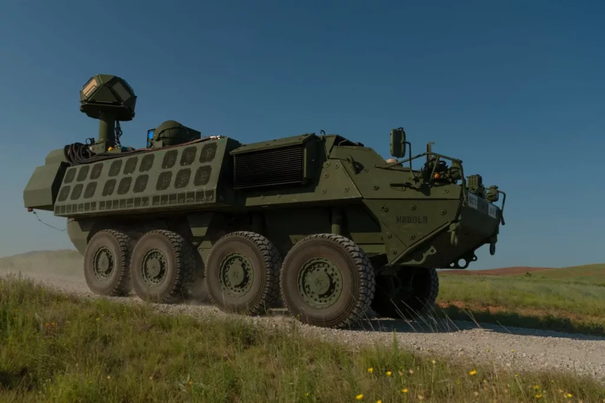

ဒီစမ်းသပ်မှုမှာ ပြိုင်ဖက် ကုမ္ပဏီတွေ ဖြစ်တဲ့ Northrop Grumman နဲ့ Raytheon ကုမ္ပဏီတို့က ထုတ်လုပ်တဲ့ ဝပ် ၅၀ အားရှိ လေဆာလက်နက်များကို ပစ်ခတ်စမ်းသပ်ခဲ့တာ ဖြစ်ပါတယ်။ ဒီစမ်းသပ်မှုမှာ စစ်မြေပြင် အခြေအနေတွေနဲ့ အတတ်နိုင်ဆုံး တူညီအောင် အခြေအနေတွေ ဖန်တီးပြီး စမ်းသပ်ခဲ့တာ ဖြစ်ပါတယ်။
ဒီလို စမ်းသပ်ရာမှာ ပစ်မှတ်တွေကို လူမဲ့ ဒရုန်းတိုက်ခိုက်ရေးယာဉ်တွေ၊ ဒုံးကျည်တွေ၊ အမြှောက်ကျည်တွေ မော်တာကျည်တွေကို ပစ်ခတ်စမ်းသပ် ခဲ့တာပဲ ဖြစ်ပါတယ်။
“ဒီ လေဆာလက်နက် တပ်ဆင်ထားတဲ့ Stryker သံချပ်ကာ ယာဉ်တွေဟာ စစ်မြေပြင်မှာ ကြုံတွေ့လာမယ့် အခြေအနေတွေနဲ့ တူညီတဲ့ အခြေအနေတွေကြားမှာ ပစ်ခတ်စမ်းသပ်မှု ပြုလုပ်ခဲ့တာ ဖြစ်တယ်” လို့ အမေရိကန် တပ်မတော်ရဲ့ သတင်းထုတ်ပြန်ချက်မှာ ပါရှိပါတယ်။
စစ်မြေပြင်မှာ လေဆာလက်နက်တွေကို တိုက်ခိုက်ရေး အတွက် အသုံးချဖို့ဆိုတာ စစ်ဆင်ရေး စီမံကိန်း ရေးဆွဲသူတွေရဲ့ အိပ်မက်ဟောင်း တစ်ခုဖြစ်ပါတယ်။ အခုလို စမ်းသပ်အောင်မြင်သည့်တိုင် လက်ရှိ နည်းပညာ တိုးတက်မှုတွေက အမေရိကန် တပ်မတော်ရဲ့ လေဆာလက်နက် စီမံကိန်းလိုအပ်ချက် အချိန်ဇယားကို အမှီလိုက်နိုင် မလိုက်နိုင် မသေချာ သေးပါဘူး။ ဒါပေမယ့် အခုလက်နက် စမ်းသပ်သူတွေကတော့ သူတို့ရဲ့ လေဆာ လက်နက်ဟာ “နောင်အနာဂတ် စစ်ပွဲကြီး” အတွက် အသင့် ဖြစ်နေပြီလို့ ပြောပါတယ်။
“လှုပ်ရှားတပ်ဖွဲ့တွေမှာ လေဆာလက်နက် တပ်ဆင် အသုံးပြုတာ ဒီဟာ ပထမဆုံး ဖြစ်ပါတယ်။ နည်းပညာက အဆင်သင့် ရှိနေပါပြီ။ ဒါဟာ အနာဂတ် စစ်လက်နက်တွေရဲ့ ပထမဆုံး ခြေလှမ်းပါပဲ” လို့ တပ်မတော် သတင်းထုတ်ပြန်ချက်မှာ ပါရှိပါတယ်။

အရင်ကလဲ အီရတ်နဲ့ ဆီးရီးယားမှ တာဝန်ချထားတဲ့ Stryker သံချပ်ကာယာဉ်တွေမှာ လေဆာလက်နက် တပ်ဆင်ဖို့ ကြံစည်ခဲ့ပါသေးတယ်။ အဓိကက ဒရုန်းတွေနဲ့ ဝင်လာမယ့် ဗုံးတွေ (flying IEDs) ကို ဖျက်စီးဖို့ ဖြစ်ပါတယ်။ ဒါပေမယ့် ဥရောမ စစ်မြေပြင် လိုအပ်ချက်က အရေးကြီးလာတာမို့ ဒီဥရောပ စစ်မြေပြင် အခြေအနေနဲ့ လိုက်လျောညီထွေ ရှိမယ့် လေဆာလက်နက်ကို ပြောင်းလဲ တီထွင် ဖန်တီးခဲ့တာ ဖြစ်ပါတယ်။
၂၀၁၄ ခရိုင်မီးယားကို ရုရှားက သိမ်းပိုက်ပြီးနောက်ပိုင်း နေတိုး စစ်ရေး သုံးသပ်သူတွေက နေတိုးရဲ့ အနောက် ဥရောပ စစ်နယ်ဝန်းမှာ တာတို လေကြောင်းရန် ကာကွယ်ရေး စနစ် လိုအပ်ချက် ရှိနေတယ်လို့ သုံးသပ်ကြပါတယ်။ ဒီ လိုအပ်ချက်ကို ဖြည့်ဆည်းဖို့ စစ်မြေပြင်သုံး လေဆာလက်နက်ကို တီထွက် ဖန်တီးတာပဲ ဖြစ်ပါတယ်။
ဥရောပ စစ်နယ်ဝန်းမှာ တပ်ဖြန့်ထားတဲ့ အမှတ် (၂) မြင်းတပ်ရင်း (2nd Cavalry Regiment) က ၅ ကီလိုဝပ် လေဆာလက်နက်တွေကို Stryker သံချပ်ကာ ယာဉ်တွေ ပေါ်မှာ တပ်ဆင် အသုံးပြုခဲ့တာ နှစ်အနည်းငယ် ရှိခဲ့ပါပြီ (US ကြည်းတပ်မှာ Cavalry regiment ဆိုတာက reconnisance လို့ခေါ်တဲ့ စစ်မြေပြင် ကင်းထောက်တာဝန် ထမ်းဆောင်တဲ့ သံချပ်ကာ တပ်ရင်း ဖြစ်ပါတယ်။ သံချပ်ကာ တပ်ရင်းကို အစဉ်အလာ regiment လို့ခေါ်ပြီး battalion ဆိုတာက ခြေလျင်တပ်ရင်းကို ခေါ်တဲ့ အမည် ဖြစ်ပါတယ်။ သံချပ်ကာ တပ်ခွဲကိုတော့ Squadron လို့ ခေါ်ပါတယ်)။ အခု ၅၀ ကီလိုဝပ်လက်နက်ကတော့ အဖျက်စွမ်းအား ၁၀ ဆ တက်လာတာပဲ ဖြစ်ပါတယ်။ အရင်စနစ်က ဒရုန်းတွေနဲ့ လက်နက်ကြီး ကျည်၊ ဒုံးကျည်တွေကို ဖျက်စီးရာမှာ သိပ်မစွမ်းလှပေမယ့် အခု ၅၀ ကီလိုဝပ်ကတော့ စွမ်းဆောင်ရည် အများကြီး တက်လာပါတယ်။
“ဒီလက်နက်ဟာ လူမဲ့ လေယာဉ် (ဒရုန်း) တွေ၊ ဒုံးကျည်တွေ၊ အမြှောက်ကျည်တွေနဲ့ မော်တာကျည်တွေကို ပစ်ချနိုင်မှာ ဖြစ်ပါတယ်။ ဒီ လေဆာ လက်နက်တွေကြောင့် တပ်မတော်ရဲ့ လေကြောင်းရန် ကာကွယ်ရေးနဲ့ ဒုံးရန်ကာကွယ်ရေး စွမ်းရည် တိုးတက်လာမှာ ဖြစ်ပါတယ်။ တချိန်တည်းမှာ ဒီလက်နက်အတွက် ထောက်ပံ့ပေးရတဲ့ အထောက်အပံ့လဲ သက်သာသွားတော့ (ကျည်မလိုတော့တာနဲ့ ပျက်စီးနိုင်တဲ့ အစိတ်အပိုင်းတွေ နည်းသွားတာကို ဆိုလိုတာပါ) လက်နက်ပစ္စည်းတွေရဲ့ သက်တမ်းပြည့် ကုန်ကျစားရိတ် (Life cycle cost) လဲ သက်သာသွားပါတယ်” လို့ တပ်မတော်ရဲ့ ထုတ်ပြန်ကြေငြာချက်မှာ ပါရှိပါတယ်။
၂၀၂၂ ခုနှစ်အတွင်းမှာ ဒီ ၅၀ ကီလိုဝပ် လေဆာလက်နက် တပ်ဆင်ထားတဲ့ Stryker သံချပ်ကာယာဉ် ၄ စီးပါဝင်တဲ့ သံချပ်ကာ တပ်စု တစ်စုကို ရှေ့တန်း တပ်ဖွဲ့ တစ်ဖွဲ့ကို တွဲဖက်ပေးဖို့ အစီအစဉ် ရှိနေပါတယ်။
လက်ရှိ အမေရိကန် တပ်မတော် အနေနဲ့ ကီလိုဝပ် ၅၀ လေဆာလက်နက်အပြင် ကီလိုဝပ် ၃၀၀ ရှိတဲ့ အကြီးစား လေဆာ လက်နက်ကိုလဲ စမ်းသပ်လျှက် ရှိပါတယ်။ ဒီလက်နက်ကို ၂၀၂၄ ခုနှစ်ထဲမှာ စတင်အသုံးပြုမှာ ဖြစ်ပြီး ခရုစ် ဒုံပျံ (cruise missiles) တွေကို ပစ်ချဖို့ ရည်ရွယ်ထားတယ်လို့ သိရပါတယ်။
Reference: The Army is preparing its first laser weapons for battle